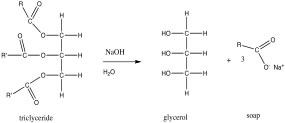
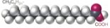
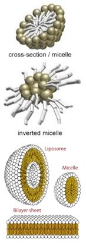

| Chapter 6.5: Molecules that are both polar and non-polar |
Up to now we have considered solutions that
are made up of molecules that are either polar or non-polar. These
are molecules whose properties are (relatively) easy to predict.
Many substances, however, have more complex structures that incorporate
polar, ionic, and non-polar groups. For example many biomolecules
cannot be classified as exclusively polar or non-polar, but rather
have regions of differing polarity, they are termed “amphipathic.” While
the structures of proteins, RNA, DNA, and other biomolecules are
complex, we can use the same principles that we have discussed to
understand how these molecules interact not only with each other,
but also within themselves. |
6.1 Solutions |
| Biomolecules are very large compared to the molecules considered in most chemistry courses, and often one part of the molecule will interact with another part of the same molecule. The “intramolecular” interactions of biological macromolecules, together with their interactions with water, are key factors in predicting their shapes. |
| Let us begin with a relatively simple (for a biomolecule) structure. In the previous section we looked at the solubility of oils in water. If you treat an oil or fat - (also known as a triglyceride, in this representation, R and R’ indicate hydrocarbon chains, which have the generic structure CH3CnH2n) with sodium hydroxide (NaOH), the resulting chemical reaction leads to the formation of what is known as a fatty acid (in this example, oxygen atoms are maroon). |  |
|  | A typical fatty acid has a long non-polar hydrocarbon chain and one end that contains a polar, and often ionic group. The polar “head” of the molecule interacts with water with little or no increase in entropy (unlike a hydrocarbon). On |
| the other hand, the non-polar region of the molecule will, if placed in water, lead to a decrease in entropy as water molecules are organized in a type of cage around it – an unfavorable outcome in terms of ΔS (and so ΔG). So, which end of the molecule “wins”? Do such molecules dissolve in water or not? The answer is: both! Such amphipathic molecules become arranged in such a manner that their polar groups are in contact with the water, and their non-polar regions are not (you might even try and see if you can draw out such an arrangement, remembering to include the water molecules in your drawing. |
There are, in fact, several ways to produce such an arrangement, depending in part on the amount of water in the system. A standard micelle, which is a spherical structure with the polar heads on the outside and the non-polar tails on the inside, is the simplest structure that can accommodate both hydrophilic and hydrophobic groups in the same molecule. If water is limiting, it is possible to get an “inverted micelle” arrangement, in which polar head groups (and water) are inside, and the non-polar tails point outward. Depending on the structure of the head group and the tail (and there are molecules of this type (lipids) that have multiple hydrocarbon tails and even carbon ring structures - the sterols), there are other highly organized structures that can form spontaneously. These include the bilayer membranes that form cellular and organellar boundaries in biological systems. It should be noted that these ordered structures are possible only because dispersing the lipid molecules in water would result in an substantial decrease in the disorder of the system. In fact, many ordered structures associated with living systems ,such as the structure of DNA and proteins, are the result of “entropy-driven” processes (yet another counter-intuitive idea) – this is one (of many) reasons that biological systems do not violate the laws of thermodynamics and why it is scientifically plausible that life arose due to natural processes! |
 |
Solutions, Colloids & Emulsions So, are micelles dissolved in water? Well, micelles are not molecules, but rather supramolecular assemblies - composed of many distinct molecules. While a glucose solution consists of isolated glucose molecules, micelles in solution are different, at least terms of the size of the solute. Because of these differences, we give such “solutions of macromolecular solutes” a distinct name, they are known as colloids. These particles can be aggregates of molecules (like micelles), atoms (nanoparticles), or larger “macromolecules” (proteins, nucleic acids), among others. When these particles are on the order of the wavelength of visible light, they scatter the light; smaller objects do not. That is why a salt or sugar solution is translucent, while a colloidal dispersion of micelles or cells (for example) is cloudy. This is the reason that soap solutions are typically cloudy - they contain particles large enough to scatter the light. When the particles in a solution can be considered “solid”, the end result is known as a colloid. Because of their small size and thermal movements such small solid particles can remain suspended - the colloid is stable. As the particles get larger, the colloid will become unstable; the influence of gravity will overcome the effects of thermal motion, and the particles will settle out. Before they settle out, such unstable systems are known as suspensions. |
On the other hand when the suspended
particles can themselves be considered liquid, the system is
known as an emulsion. There are conditions in which oil and water
can be mixed, for example in salad dressing. If we were to look
carefully (with a microscope), we would see drops of oil suspended
in water. Emulsions are often unstable, and with time the two
liquid “phases” can separate - this is one reason
that you have to shake up salad dressing. We see situations of
both colloids and emulsions in the world around us. Milk, for
example, is an emulsion of fat globules and a colloid of protein
(casein) micelles. |
6.1
Solutions |
Question to answer:
Questions to ponder:
|
| 17-Jun-2012 |